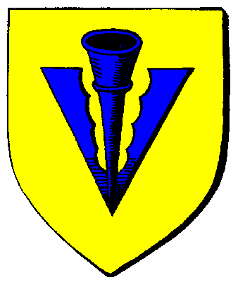

|

|
Das schwarze Brett
|
|
| Übersicht,
Allgemeines |
|
Traurig... (40  ) )
|
| Lazarus Meara (RIP) |
Ironie? das ist mein voller ernst,...naja fast wenigsten :-P
Trev sieh es dochmal so:
Krieg beginnt, brauchst diregend einen Seefahrer, man könnte selber skillen. aber was bringt das, dann komm ich zum Kriegsort an mit vielleicht max 2k Ap und kann nicht mehr viel reißen. Also Doppel Acc Seefahrer. Aps schonmal für den Kampf gespart. Dann brauch ich noch 2 Accs um Intensiv gebäude zu zerstören. Hat zufälligerweise 4 Browser Offen um alle Accounts auch ordentlich zu spielen ohne sich ummelden zu müssen. Das heißt ich kann innerhalb von wenigen Sekunden aggieren. Was wichtig ist.
Nun ich sagte ja am anfang ist es eine Art verlust geschäft. Aber wenn alle Accounts geskillt sind. Ist jeder Tag wo sie fertig sind ein Gewinn in 100% je Account pro Tag.
Wie schon gesagt Spass ist Definitionssache. |
18.06.07 9:27
|
|
Trevanian
 |
sorry, auf Ironie hab ich nicht geachtet. Man kann ja solch eine Einstellung haben, ohne selber ein Multi zu sein.
Ich glaube nur, dass ein Einzelner keine wirklichen Vorteile durch einen Multi hat. Das lässt sich nicht rechnen.
Bei Gruppen oder Nationen ist das anders.
Natürlich hat man hier handfeste Vorteile:
Einen Account kurz hochskillen und 5-6 Türme bauen. Dann nie wieder reingehen.
Nehmen wir mal an, so etwas macht ein Account.
Es könnte ein Indiz für einen Multi sein, aber könnte nur.
((Nemo hatte damals doch viele Türme und ich hab auch 3))
Vielleicht ist in Wirklichkeit ein Spieler vorhanden, der ein Jahresabo abgeschlossen hat und plötzlich keine Lust mehr hat.
Hier kann nur mit Indizien gearbeitet werden und das stört mich.
|
18.06.07 10:20
 |
|
| Lazarus Meara (RIP) |
"Vielleicht ist in Wirklichkeit ein Spieler vorhanden, der ein Jahresabo abgeschlossen hat und plötzlich keine Lust mehr hat."
Das ist wohl der knackpunkt an der Sache. Viele haben aufgehört. Hatten aber noch nen Abo laufen und haben es dann dem Nationschef gesagt der hat diesen Account dann halt weitergeführt oder hat andere damit beauftragt. ich glaube nicht das viele sich extra nen account gemacht haben. Die meisten sind wohl übernommene Accounts die einfach weitergespielt werden. |
18.06.07 12:21
|
|
Trevanian
|
ähmmm....*hustet*
so etwas ist...ähmmm...
ich bin kein Jurist, aber lies dir mal die Nutzungsbedingungen genau durch. |
18.06.07 12:32
|
|
Nangilima Aryndeneth
 |
Puh, ich glaube, ich bin echt absolut uncool!
Ich habe keinen Multi und wenn ich jemanden sitten muß, setze ich jedesmal brav den entsprechenden Haken.
Sogar ein schlechtes Gewissen habe ich manchmal, wenn ich dann mit beiden Chars untereinander handeln muß, während ich jemanden sitte.
Und ich habe ohne einen Multiaccount das erreicht, was ich jetzt habe. Mag sein, daß es für einige, die nur nach dem Highscore und schnellen hohen Skills usw. gieren, zu wenig ist, aber ich freue mich über das, was ich erreicht habe, auch wenn ich nur ´nen kleinen einfachen Character habe ....
Und das, obwohl ich sehr viel gesittet werden mußte, weil ich nicht selber spielen konnte.
Und als die Vertretungstage abgelaufen waren, wurde ich halt auf Abwesenheit gesetzt. Okay, es dauert auf diese Weise etwas länger, bis man solche Werte wie einige andere zu stande bringt, aber es geht, und macht meiner Meinung mehr Spaß, "befriedigt" mehr, als wenn es durch unsauberes Spiel (Multis, Cheaten usw.) geschehen wäre.
Dieser Streß, 2 oder mehr Accounts über einen längeren Zeitraum zu führen, den tue ich mir nicht freiwillig an, wenn ich es umgehen kann. Ich werde doch nicht zum Sklaven des Spieles ....
Soviel zum uncoolen normalen Spielerlein, ohne Multiaccounts! Es geht, auch wenn es einige gibt, die das nicht nachvollziehen können ....
Nun aber zu der ganzen Sache, die hier in so vielen Beiträgen diskutiert wird.
Es ist nicht an mir, darüber zu entscheiden, ob Negus und Nherin Multiaccounts hatten oder nicht.
Das kann und werde ich nicht beurteilen, das wissen die beiden eh am besten selber.
Aber eines ist mir unklar, da ich mal einige Zeit bei einem anderen Spiel im Support war, und es da anders als hier lief:
Es werden normalerweise alle zu den Hauptaccounts gehörenden Multiaccounts, die man finden kann, gelöscht, da ansonsten ja der verdächtige Multi jederzeit, wenn er im Spiel neu anfängt, wieder sofort mit seinen noch vorhandenen Multiaccounts relativ schnell auf den Stand vor seiner Löschung kommen kann, zumindest schneller als ein Spieler mit nur einem Account.
Das ist das, was mir an dieser ganzen Sache nicht gefällt.
Wenn die beiden Multis sind, müssen alle dazugehörigen Accounts mitgelöscht werden, sind dieses keine nachweisbaren Multiaccounts, sollten auch die verdächtigen Hauptaccounts nicht gelöscht, sondern verwarnt werden, und man behält sie mit besonderen Auflagen genau im Blick.
Das ist das, was ich an dieser ganzen Sache nicht verstehe ....
Aber:
Wer so schlecht spielt, daß er Multiaccounts braucht und bezahlen muß, und deswegen mehr Zeit als andere vor dem PC verbringt, tut mir schon fast leid. Muß doch echt öde sein, wenn man nichts besseres zu tun hat, als sich zig Accounts zu machen, um im Spiel groß rauszukommen, wenn man soviel Zeit vor dem PC verbringt, daß einem das RL irgendwann regelrecht fremd wird. |
18.06.07 17:14
|
|
| Eran von Aibheisgârd (RIP) |
Bla bla blablabla bla bla blaaa
Tu nicht so als ob es so großartig wäre mehr Zeit mit diesem sogenannten RL zu verbringen und weniger mit dem PC...
Selbstgemalte Welten sind noch immer die Schönsten! |
18.06.07 19:33
|
|
| Marius Janus (RIP) |
Und auch die kleinsten ... |
18.06.07 20:08
|
|
Liriel Schattenlauf
 |
Wer dieses spiel liebt, spielt es und hat auch immer ein Ziel. Wenn ich meines anschau werden viele glauben ich wär bekloppt is mir jetzt aber schnuppe
"Es gab keine Monster mehr die ich erschlagen konnte.
Es gab keinen Skill mehr den ich verbessern konnte.
Es gab wirtschaftlich nichts mehr was sinn machte ausgebaut zu werden.
Ich hatte keine Ziele mehr ausser die 10.000.000 Ruhm."
Mensch dann fang neu an. Lösch den acc und fang neu an. Ich habe auch eine verdammt gute Kriegerin (und Gauklerin) aufgegeben um neu zu beginnen und schau mich jetzt mal an? Ok ich bin ein schlechtes beispiel mein Char ist ziemlich behämmert aber ok ich habe spass daran, bau nur mist, sitz jetzt schon wieder ohne Gold rum und hab meinen Spass. Vorallem weil ich wieder Ziele hab. Lösch doch deinen Char und beginne neu, vielleicht als Dieb Sulganothis *hust* Als Krieger Lismas ^^ oder wenn de ned bös spielen kannst (was schwerer ist wegen den Sklaven) dann spiel halt was dir passt. Jeder der behauptet er hätte keine Ziele mehr ist nur fantasielos und ist so bedeppt und kann den Char ned löschen wegen irgendwelchen verantwortungen. Hey jetzt scheisst doch mal auf diese Verantwortungen. Warnt die anderen vor und löscht den acc um dann neu zu beginnen. Dann hätten die zurück geblieben Arbeit und ihr auch wieder. Also wenn ich den Char Falster spielen müsste wärs mir zu doof weil der zu mächtig ist.
Sehr das Spiel als ein Spiel und ned als ernst und vergesst auch mal die "Verantwortung" hier und beginnt neu, es ist mit einem winzling von nem Char noch verdammt lustig zu spielen vorallem weil man weiss das zum teil sogar eine Fliegentruppe euch in die Hölle jagen kann. |
20.06.07 0:58
|
|
| Vincent Aquila (RIP) |
Ja, Liriel, als Plünderer kann man das sicher leicht machen. Aber der Spieler, denn Du hier zitiert, hat die Größe Holzproduktion auf der Schwerbe. Er Versorg 5 Großstädte alleine mit Holz und verkauf zu den engpässen 100derttausende von Holzstämmen auf der ganzen Schwerbe. Wenn er löschen würde, dann würde er seine Nation (also seine Freunde) in eine Wirtschatfkrise stürzen. Verantwortungsvolle Leute machen so etwas nur sehr sehr ungerne.
Ich möchte garnicht wissen, wieviel die Holzhütte mittlerweile Wert ist ... ist bestimmt ein 3 Stelliger Millionen Betrag. |
20.06.07 10:23
|
|
Liriel Schattenlauf
|
*lol* *hust* genau desswegen lass ich mich ned anbinden. Grossausbauten, nein danke. Nedmal mein Vorgängerchar hatte grossausbauten gekriegt und führte eine Stadt. Aber wie gesagt wer sich so anbinden lässt ist meiner ansicht nach auch selbst schuld. Faron Exitus hatte mit seinen Türmen wichtige Gebäude geschützt, na und? Der Kerl hat aufgehört. Im richtigen Leben könnt ihr ja auch nicht sagen "und ich kündige diesen Job nicht auch wenn er mich anscheisst. Ich will meine Freunde nicht in eine Wirtschaftskriese werfen" oder "Ich kündige diesen Job nicht obwohl ich weis das ich morgen eh flöten geh ich arbeite weiter." ^^ is nur meine einstellung |
20.06.07 12:50
|
|
| Sâlía Séregon (RIP) |
dann könnte er aber doch seinen char zb mit einem anderen tauschen, der vielleicht mal großproduzentenluft schnuppern will? *g* schon isser frei...
oder er kündigt entsprechend lang vorher an, dass er die prod still legt und sich wieder etwas spaß am spiel verschafft. gute freunde respektieren sowas und sorgen lieber dafür, dass so jemand freiräume erhält, bevor er den spaß am spiel verliert. |
20.06.07 16:29
|
|
Cadacan von Tacheless
 |
jetzt hat vincent mich über die größe der holzhütte neugierig gemacht....
awaky, massenwarengroßproduzent is für gewöhnlich der undankbarste job den man machen kann. Ich kann mir kaum jemanden vorstellen, der so einen acc gerne übernehmen würden |
20.06.07 16:51
|
|
| Sâlía Séregon (RIP) |
ich weiß, cadacan, ich war selbst einmal eine und auch arela ist aktuell einer....
aaaaber... wär ich die person mit der hütte, würde ich sagen: lasst euch was einfallen, wie ich spaß wiederfinden kann, oder ich bin über kurz oder lang weg... natürlich mit entsprechender warnfrist...
aber ich pers. würde mich nicht für immer dafür zur verfügung stellen... das sind irgendwann auch ´freunde´ nicht mehr wert... ganz ehrlich net |
20.06.07 16:55
|
|
| Vincent Aquila (RIP) |
Ich glaube Awaky, das sehen einige Leute zum Glück anders. Denn ohne diese Produzenten, auf die sich ein BM verlassen kann, hat er keine Chance eine Stadt wachsen zu lassen. Und da es einige Große Städte gibt, bin ich davon überzeugt, dass es auch verlässliche Produzenten gibt. |
20.06.07 17:04
|
|
| Sâlía Séregon (RIP) |
tja... ich sagte ja auch "ich persönlich"
und meine güte, wer so verlässlich ist, soll sich dann auch nciht beschweren, finde ich :)
niemand muss in diesem spiel ohne spaß dastehen...jeder kann sich selbst spaß schaffen... wenn er es denn möchte. |
20.06.07 17:33
|
|
| Obsidia Schwarzfeder (RIP) |
Ja, manch einer mag seinen Spaß daraus ziehen, seine Produktions in unermeßliche wachsen zu lassen, die größte Holzhütte - oder welches Gebäude auch immer - auf der Scherbe zu haben. Aber ob das dann Spaß auf Dauer ist, halte für sehr unwahrscheinlich. Denn auf dem Sektor ist dann tatsächlich irgendwann alles erreicht, und es wird nur zur lästigen Pflicht, sich um seine Gebäude zu kümmern.
Davon mal abgesehen, man muß doch damit rechnen, daß einem Mitspieler das RL mal dazwischenfunkt und er keine Zeit, kein Geld oder keine Lust mehr hat. Und ich halte es - IG als auch RL - für die falsche Strategie gigantische Monobetriebe aufzuziehen. Mag sein, daß es anders länger dauert ´zu etwas zu kommen´ aber es ist der´gesündere´ Weg.
Ich mach mir allerdings keine Illusionen darüber, daß in dieser Beziehung ein Umdenken stattfindet. Dazu ist das Konkurrenzdenken einfach zu groß.
Ich selbst halte es da wie Liriel: Großausgebaute Produktionsgebäude - nein Danke. Würde mich zu sehr einschränken und ich hätte viel zu schnell keinen Spaß mehr an Spiel. Und auch mein Vorgängerchar - eine Gutelfe, wie sie im Buche steht - hat sich nie eine tragende Rolle für die Stadtversorgung aufdrücken lassen. Die Verläßlichkeit war da eine andere: wer, wo auch immer auf der Scherbe ihre Hilfe gebraucht hat, konnte sich drauf verlassen, daß sie alles stehen und liegen läßt, und anreist - und das ohne daß sie der Seefahrt mächtig war. |
20.06.07 18:47
|
|
| Nalon din Adun (RIP) |
Es sind diese Spieler, die so verlässlich sind und sich auf Wirtschaft konzentrieren, die die Infrastruktur der Scherbe voran treiben und in gewissem Sinn auch darstellen.
Einige derjenigen hier, die sagen, lösch doch einfach und fang neu an, würden sich arg umschauen, wenn diese Infrastruktur plötzlich zusammen brechen würde und damit zum einen höchste interessante Reiseziele wegfallen, als auch eine Unmenge an Routen oder auch ganz simpel an Laufwegen weil Monster nicht mehr eingedämmt werden.
Es ist immer schön, sich in einem funktionierenden System hinzustellen und zu sagen, also für mich geht das so. Dabei ignoriert man natürlich, dass es eben, wenn es alle machen, das so eben absolut nicht mehr geht, das aber ist dann egal und die Leute selber schuld... |
02.07.07 9:14
|
|
Tilion
 |
Die Theorie, dass die Scherbe ohne Multis ja komplett ins Chaos fallen würde, ist etwas fatalistisch, würde ich meinen.
Was es ganz klar weniger geben würde, wären Uniwaffen, und zwar vor allem 20er FKs und Rüssis.
Grad das würde den RPlern aber zugute kommen, da die verschiedenen Machtblöcke nicht mehr in der Form PvP-Überchars züchten könnten.
Hochgezüchtete Wirtschaften inkl. deren Multis dienen nicht dem Zweck, einfache Infrastruktur zu schaffen, wie Routen legen oder 50-100k Städtchen zu betreiben.
Sondern sie dienen dem Zweck, Uniwaffen hervorzubringen, Eds und Heilzeug massenhaft zur Verfügung zu haben, viele PP und Armeen zur Verfügung zu haben etc.
Es dient dazu, Kriege vom Zaun zu brechen, und zwar mit maximal zerstörerischem Ausmaß!
Wenn sich nun ausschließlich Multination vs. Mutlination die Köpfe einschlagen würde, von mir aus! Aber dem ist ja nicht so bzw. eher selten!
Oft genug haben die Leuts, die die Ressourcen nur so hinten reingesteckt bekommen haben, die große Fresse. Weil sie ganz genau wissen, dass sie eine ganze Nation Normal-Spieler quasi im Alleingang tempeln könnten. |
02.07.07 10:17
|
|
| Liliana (RIP) |
Stimme Tilion voll und ganz zu! |
02.07.07 10:21
|
|
| Nalon din Adun (RIP) |
Meine Aussage bezog sich auf die, etwas themenfremden, Anschläge direkt davor.
Den Rest braucht man nicht immer wiederkäuen, aber der Weg in den Abgrund ist vorgezeichnet und wird auch mit der kürzlichen Quest nur temporär gestoppt. |
02.07.07 14:47
|
|
Tilion
|
das stimmt, das war themenfremd. Problem Massenwaren zieht zu große Kreise. Einer der vielen Punkte, bei denen Änderungen her müssten.
Und die fehlenden Änderungen sind es meiner Meinnung nach (und nicht das Verhalten des Support, der ja auch nicht in der Lage ist, das Spiel voranzutreiben), die das System konterkarieren und zum Ende des Spieles führen werden, mag dieser Prozess auch nur schleichend sein.
Ich befürchte nur, die notwendigen Änderungen wären viel zu weitreichend, als dass sie auf allg. Akzeptanz stoßen würden.
Damit wird man sich wohl abfinden müssen, dass her irgendwann die Lichter ausgehen werden.
Ich schätze, ich bleib dabei, bis es soweit ist, und habe schon viele andere mit der gleichen Aussage gehört.
Natürlich... allein schon die verbreitete Aussage "ich bleib bis zum Schluß" macht es deutlich, wohin die Reise geht... |
02.07.07 15:37
|
|
Übersicht,
Allgemeines
|
|
|
|